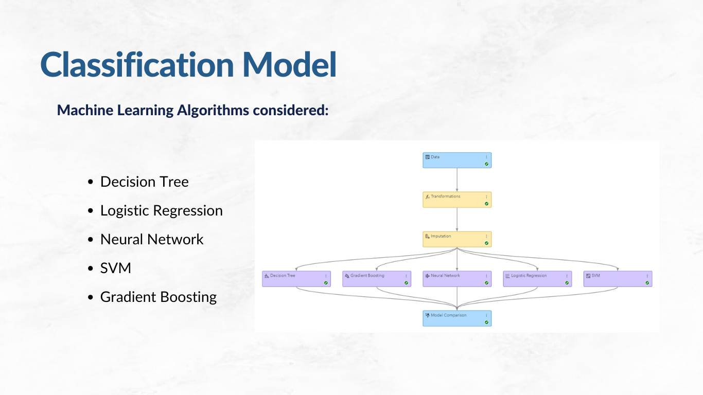

About Me
I am a Data Analyst with a background in SAS, R and Python programming.
Projects and Demos
Cick on each item to find out more!
Predicting coupon purchase based on user characteristics
Built a machine learning classification model using SAS Model Studio to predict if a customer is likely to purchase a coupon based on the coupon and user characteristics. Part of SAS AIML Program Final Project
Visualising the Global Attitudes Spring 2022 Survey
This short project looks into the attitudes of Singaporeans towards both China and the United States and explores the distinctive characteristics of Singaporeans who exhibit varying attitudes towards these two nations. Data visualisations were designed using the dataset from the Pew Research Center Spring 2022 survey to gain a deeper understanding of this subject. Part of ANL501 Graded Assignments.
Excel Data Extraction With Python
In this short project, a resuable Python script was created to read in twelve Excel documents and upload them directly into a MySQL database. The sheet name to be extracted in each file differs and the postion of the sheet also varies across each excel file. A single query was then created with the help of a Python script to combine the twelve tables into one. Part of ANL503 Graded Assignments.

TBC
Description TBC.